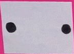

a staple of my childhood and now, my adulthood
it is cheap, quick and alledgedly has b-vitamins
not sure if I'm a happy little vegemite, but my belly is full

escape to cat city ||my bitsy game
cat facts||twitter bot
trying stuff out||testers
a moment in time||hypertext
back to the start||home